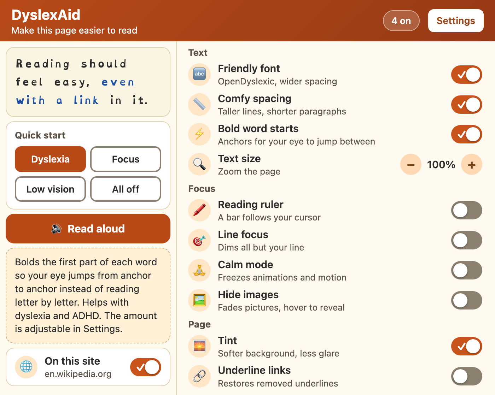
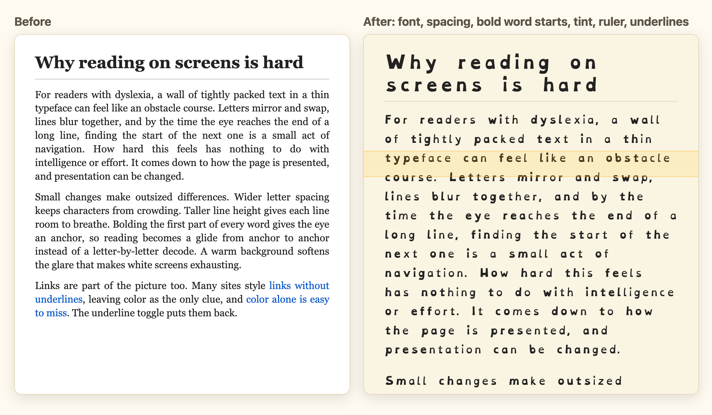

A free Chrome extension for dyslexia, ADHD, and low vision.
One click gives you a dyslexia-friendly font, bold word starts, a reading ruler, a calmer page, or a voice that reads it to you. Nothing leaves your browser.
Free and open source. Read the code on GitHub.

The article below is running the extension's real code. Flip anything and watch it change. There is nothing to install.
Move your mouse over the article to use the ruler and line focus.
Swaps the page to OpenDyslexic, whose heavy letter bottoms keep b, d, p, and q from flipping.
Bolds the first part of each word so your eye jumps from anchor to anchor. Works on endless feeds too.
Taller lines, shorter paragraphs, left-aligned text, and lines capped at a readable length.
A soft bar follows your mouse, or your keyboard, so you never lose your line.
Dims everything except the band you are reading. The ruler's stronger sibling.
Freezes animations and moving parts. For ADHD, migraines, and motion sickness.
Reads your selection or the whole article using the voice already in your browser.
Cream, blue, yellow, or green over a glaring white page. Dark pages are left alone.
Hide images, underline links, zoom text to 160%, pause it on one site, and keyboard shortcuts for all of it.

The Dyslexia preset turns on the font, spacing, bold word starts, and a tint in one click. Adjust the amount and color in settings.
The Focus preset stills the page: ruler on, animations off, images faded until you hover.
Bigger text, wider spacing, underlined links, and the ruler. The popup itself was measured against WCAG AA.
A cream tint and a calmer page are easier on everyone at 11pm.
DyslexAid has no analytics, makes no network requests, and needs no account. Your settings stay in your own Chrome profile. Read aloud uses the speech engine on your computer, so text is never sent anywhere. Full privacy policy.
The Chrome Web Store listing is on its way. Until then, install it in about a minute:
chrome://extensions and turn on Developer mode (top right).